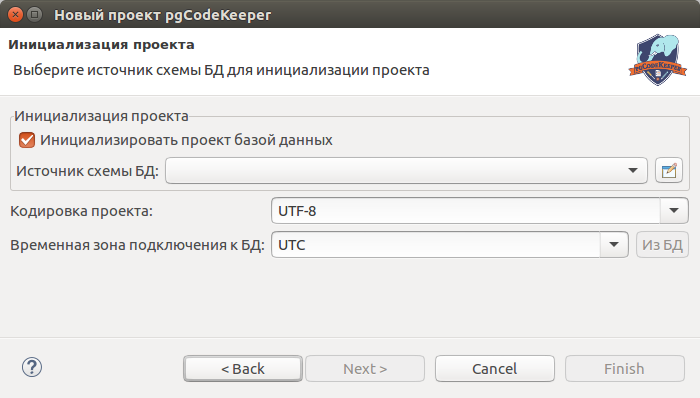

Открываем мастер создания нового проекта: File -> New -> Project...
Выбираем Проект pgCodeKeeper. Нажимаем кнопку Next.
Указываем имя проекта. Нажимаем кнопку Next.
Выбираем источник базы данных, кодировку проекта и временную зону подключения к БД (имеется возможность получить из текущей БД) или отключаем параметр "Инициализировать проект базой данных" и оставляем поля пустыми, а затем нажимаем кнопку Finish.
После короткого ожидания получаем новый проект и автоматически открывается Редактор проекта pgCodeKeeper.